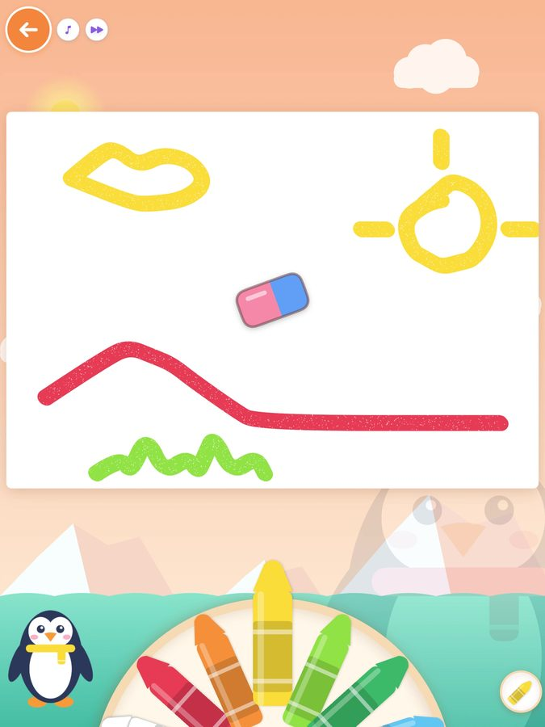
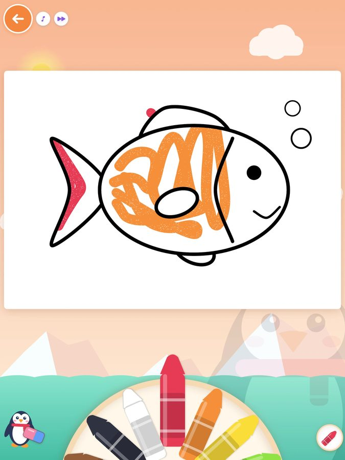
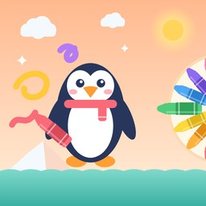

Die erste Mal-App für Kinder von 1 bis 4: dicke Wachsmalstifte, 150 Ausmalbilder und Pino, der Pinguin.
Im App Store laden

Kinder von 1 bis 4 Jahren
iPad und iPhone (ab iOS 16) · 12 Sprachen
Keine Werbung · kein Konto · kein Tracking
Preise in Euro für Deutschland; in anderen Ländern zeigt der App Store den Landespreis. Abos verlängern sich automatisch und lassen sich jederzeit in den Einstellungen deiner Apple-ID kündigen.
Verantwortlich: Alexander Matthias Müller – Perlage Apps, Barnefeldstraße 12E, 31515 Wunstorf, Deutschland, E-Mail: info.perlage-apps@web.de. Du hast das Recht auf Auskunft, Berichtigung, Löschung, Einschränkung und Widerspruch (Art. 15–21 DSGVO) und kannst dich bei einer Aufsichtsbehörde beschweren, z. B. bei Die Landesbeauftragte für den Datenschutz Niedersachsen, Prinzenstraße 5, 30159 Hannover. Stand: November 2026.
Oben links auf das Zahnrad tippen und die Rechenaufgabe lösen. Dort gibt es Einstellungen, eigene Ausmalbilder, Sichern, Drucken und die Vollversion.
Im Elternbereich auf „Käufe wiederherstellen“ tippen. Dafür muss dieselbe Apple-ID (oder ein Mitglied derselben Familienfreigabe) angemeldet sein.
Nein. Der Test endet von selbst, es entsteht kein Abo und es wird nichts abgebucht.
Pino unten in der Ecke antippen – er legt den Radiergummi aufs Blatt. Zum Aufhören den Radiergummi zu Pino zurückschieben oder einen Stift antippen.
Nur auf dem Gerät, automatisch beim Zurückgehen. Löschen im Elternbereich oder – wenn eingeschaltet – mit dem Mülleimer in „Meine Bilder“.
Noch eine Frage? Schreib uns: info.perlage-apps@web.de